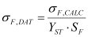

|
|
|


模块特定设置
合并所需的最少数据点数：
用户可以限制合并所需的最少试验次数。最少可能次数为 2，但 VDI 2736 要求至少 3 次测量。
分组所需的最少数据点数
使用此设置指定在 .dat 材料文件中对结果进行分组所需的最少合并点数。最少可能点数为 2。
允许的失效循环次数偏差：
对于每个试验条件（扭矩和温度），至少应进行 3 次试验，以获得失效循环次数的统计分布。如果失效循环次数的标准差除以失效循环次数的平均值超过设定值，则会显示警告消息。
允许的转速偏差：
如果转速的标准差除以转速的平均值超过设定值，则会显示警告消息。
参考试验齿轮的应力修正系数（YST）：
计算得到的齿根应力会除以应力修正系数，然后记录到 .dat 材料文件中。

齿根安全系数（SFMIN）：
计算得到的齿根应力会除以齿根安全系数，然后写入 .dat 文件。
齿面安全系数（SHMIN）：
计算得到的齿面应力会除以齿面安全系数，然后写入 .dat 文件。
通电时间、壳体传热热阻、壳体散热表面积：
使用设定值根据测得的齿根和齿面温度计算齿轮传热系数。更多信息请参见 VDI 2736-2 [14]。
脉动器试验结果
选择此选项可评估由脉动器测得的齿根耐久性数据。
基于一个文件的试验齿轮几何形状
在此可以选择两种不同的试验结果类型之一（参见齿轮试验结果）。
根据测得的齿轮磨损计算磨损系数
如果选择此选项，则根据选项卡中定义的平均磨损计算磨损系数。
以 LOG 比例显示允许的齿根/齿面应力
齿根/齿面应力可以按 LOG-LOG 比例或 LOG-LIN 比例显示。
Module specific settings
Minimum number of data points for merging:
The user can limit the minimum number of tests needed for merging. The minimum possible number is 2, however VDI 2736 requires at least 3 measurements.
Minimum number of data points for grouping
Use this setting to specify the minimum number of merged points needed to group results in a .dat material file. The minimum possible number is 2.
Permitted deviation of cycles to failure:
For each testing condition (torque and temperature), at least 3 tests should be performed to get a statistical distribution of cycles to failure. A warning message is displayed if the standard deviation of cycles to failure, divided by the mean value of cycles to failure, exceeds the set value.
Permitted speed deviation:
A warning message is displayed if the standard deviation for speed divided by the mean value for speed exceeds the set value.
Stress correction coefficient of reference test gear (YST):
Calculated tooth root stresses are normalized by the stress correction factor and then recorded in a .dat material file.
Root safety (SFMIN):
Calculated tooth root stresses are divided by the root safety factor and then written to a .dat file.
Flank safety (SHMIN):
Calculated tooth flank stresses are divided by the flank safety factor and then written to a .dat file.
Power-on time, Housing heat-transfer resistance, Housing heat-dissipating surface:
The set values are used to calculate gear heat transfer coefficients based on the measured root and flank temperatures. For more information see VDI 2736-2 [14].
Pulsator test results
Select this option to evaluate tooth root endurance data measured by the pulsator machine.
Test gear geometry based on one file
Here, you can select either one of two different test result types (see chapter Gear test results).
Calculate wear factors from measured gear wear
If you select this option, the wear coefficients are calculated on the basis of the average wear as defined in the tab.
Display permissible root/flank stresses in LOG scale
The tooth root/flank stress can be displayed either in a LOG-LOG scaling or in a LOG-LIN scaling.